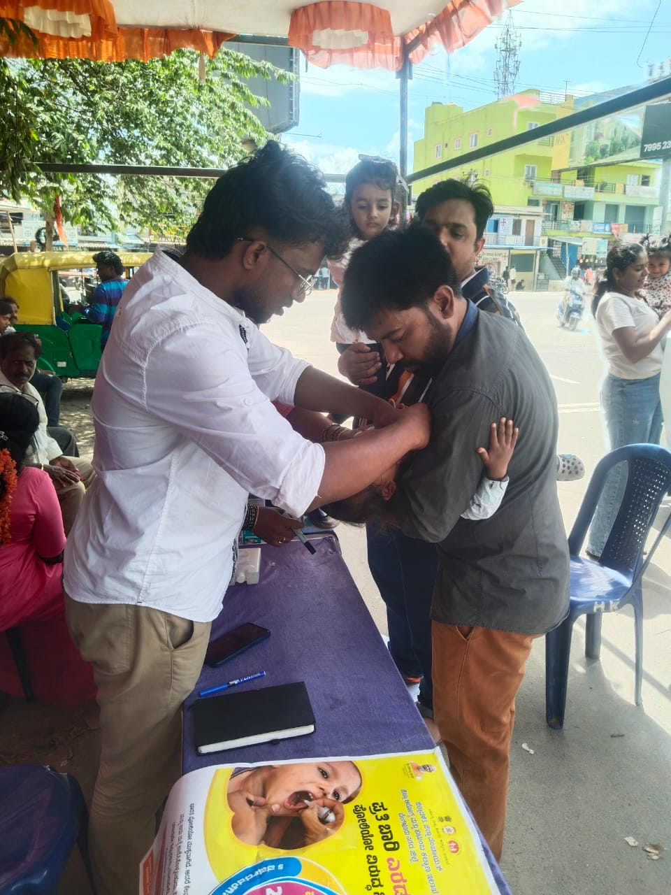
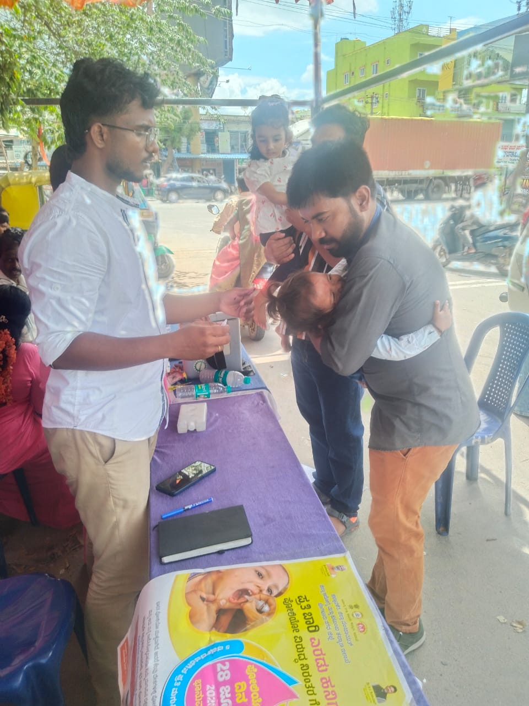

Eradicating Polio: My Fieldwork Experience in the Nationwide Immunisation Drive
The nationwide Pulse Polio Immunisation Campaign in India took place from June 28th to 30th, 2026, coinciding with National Immunization Day[cite: 21]. This massive public health initiative relied heavily on a rigorous house-to-house survey to ensure comprehensive coverage[cite: 21].
The primary objective of the Pulse Polio drive is to ensure that children aged five and under receive the vital vaccine, either through local Anganwadis or via our direct door-to-door surveys[cite: 21]. This vaccination protocol is absolutely mandatory for safeguarding children's health across the country[cite: 21].
Rigorous Preparation and Cold Chain Logistics
Before beginning our fieldwork, we underwent a crucial briefing and were given special instructions regarding the medical logistics[cite: 21]. We learned exactly how to keep the vaccine vials safely inside our carrier boxes and the strict temperature parameters required to maintain their efficacy[cite: 21].
Additionally, we were trained on what specific markings to make during our surveys and how to continuously check the condition of the vials—critical details we had to keep firmly in mind before stepping out into our assigned zones[cite: 21].

Throughout the day, we saw a steady stream of parents bringing their young children to our roadside station. Managing the cold chain while efficiently processing each family required constant coordination and focus, ensuring the vaccine retained its efficacy in the outdoor heat.

Mapping the Households: Our Survey Strategy
From June 28th to 30th, we continued our intensive house-to-house Pulse Polio drive[cite: 21]. To cover the large expanse of the Sarjapur villages, our volunteer force was strategically divided into pairs[cite: 21]. Each pair was tasked with surveying 150 households per day, aiming for a rigorous target of 300 households over the two-day period[cite: 21].
The distribution of our teams across the region was extensive[cite: 21]:
- Billapura Panchayati: Varun’s pair successfully covered 300 households[cite: 21].
- Burungunte: Gourav and Satish surveyed another 300 households[cite: 21].
- Adigara Kallahalli: Two pairs (Anish with Kushum, and Durgesh with Khushi) managed an impressive combined total of 600 households[cite: 21].
- Billapura Anganwadi: Nachiket and Prithvi covered 300 households, coordinated by Madam Shanta and Madam Jamuna[cite: 21].
- Primary Health Centre (PHC): Several other volunteers were stationed directly at the PHC to manage walk-ins[cite: 21].
My partner, Aatish, and I were assigned to the area near the Exide Gate[cite: 21]. Under the excellent guidance of our coordinator, Madam Muthulaksmi, we successfully completed our quota of 300 households[cite: 21].
Our days began early at 8 A.M. and had no fixed end time; we walked tirelessly on foot, ending only when our daily targets were met[cite: 21]. Collectively, our NSS team successfully surveyed more than 1,800 households[cite: 21].
Conclusion: Reflections Beyond the Textbooks
This fieldwork was a profound learning experience, teaching us far more about public health execution than we could ever read in books[cite: 21]. One of the most fascinating aspects was witnessing the power of community trust firsthand[cite: 21]. We encountered several families who were completely unaware of the polio campaigns, yet they immediately allowed their children to be vaccinated based purely on the reassuring advice of their educated and trustworthy neighbors[cite: 21].
Walking tirelessly block by block was physically demanding, but it underscored the sheer industrious effort required to secure a healthier future for these children[cite: 21]. I am deeply appreciative of our coordinators who spent their valuable time guiding us on the ground and reinforcing the critical importance of this immunization campaign[cite: 21].